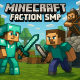

Faction SMP – Minecraft Java 1.20.1
Serverregeln
- ⚔️ Das Projekt basiert auf PvP – das Kämpfen gegeneinander ist erlaubt und erwünscht.
- 🔥 Griefing ist im Rahmen eines Angriffs erlaubt – wahlloses Zerstören ohne Kontext ist unerwünscht.
- 💀 Jeder Spieler hat nur 3 Leben. Nach dem dritten Tod ist der Spieler ausgeschieden.
- 🏰 Die Lobby ist ein neutraler Bereich – Kämpfe und Angriffe sind dort nicht möglich.
- ❌ Cheats, Hacks und unerlaubte Mods (z. B. X-Ray, KillAura, AutoClicker etc.) sind strikt untersagt.
- 🤝 Freundlicher Umgang ist gewünscht.
- 🎯 Jeder Spieler gehört einem Team an (Rot, Blau oder Gelb). Team-Wechsel ist nicht möglich.
- 👑 Jedes Team hat einen Teamleiter. Stirbt der Teamleiter dauerhaft, gilt das gesamte Team als besiegt.
- 🛡️ Der Teamleiter ist verantwortlich für sein Team – Taktik, Organisation und Kommunikation.
- 📜 Regeln können während des Projekts erweitert oder angepasst werden – alle Änderungen werden angekündigt.
- 📢 Entscheidungen der Admins sind bindend. Bei Problemen bitte direkt melden.